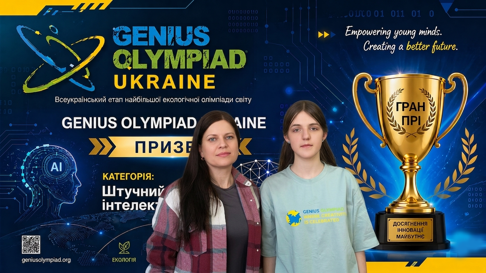
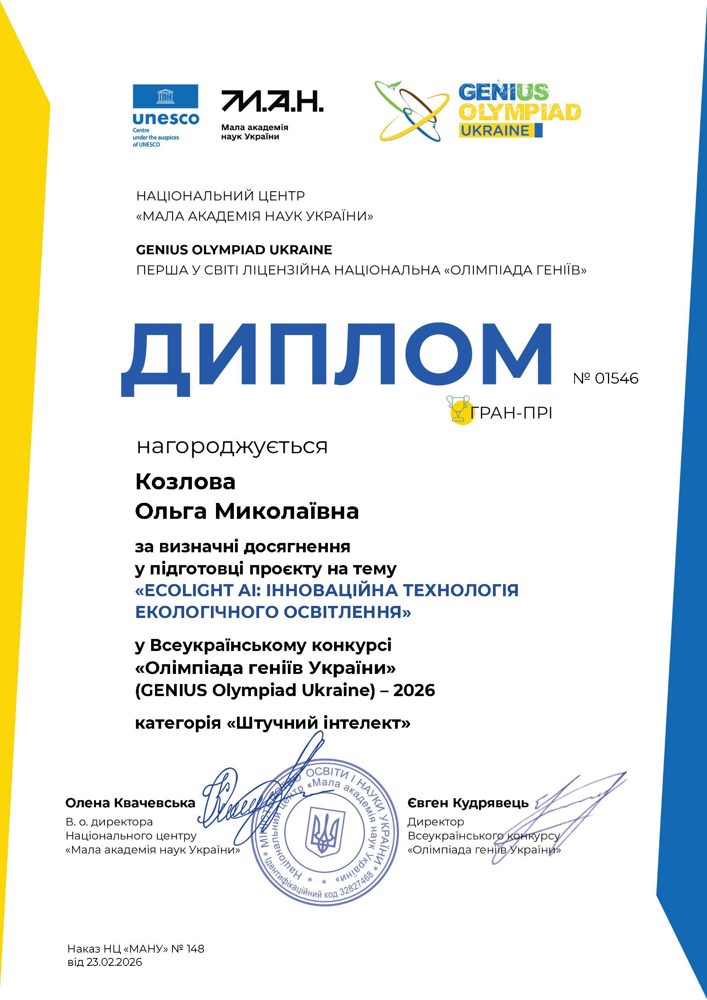

Розумне світло перемагає темряву: як школярка з Сумщини створила технологію майбутнього!

Це історія про те, як один проєкт, наполегливість і трохи штучного інтелекту підкорили національний фінал престижного міжнародного конкурсу GENIUS Olympiad Ukraine 2026.
Знайомтеся: Козлова Ольга, вихованка гуртка «Web-програмування» (науковий керівник — Дар'я Кіцаненко). Її інноваційний проєкт EcoLight AI отримав найвищу нагороду — Гран-прі 🏆
Цифри, які вражають
983 проєкти подано з усієї країни
373 роботи дійшли до фіналу
лише 7 — у категорії «Штучний інтелект»
і 1 найкращий серед них — наш!

У чому суть?
EcoLight AI — це система на основі штучного інтелекту, яка аналізує поведінку людини та адаптує освітлення під її звички й потреби. Світло вмикається саме тоді, коли потрібно, і саме з тією інтенсивністю, яка комфортна. Жодної зайвої енергії. Жодного дискомфорту.
Чому це важливо?
Технологія допомагає зменшити споживання електроенергії без жодних зусиль з боку користувача. А універсальна архітектура проєкту дозволяє застосовувати цей підхід не лише до освітлення, а й до інших систем енергоспоживання. Майбутні «розумні» будівлі можуть сказати за це спасибі.
До речі, цікавий факт...
Для навчання нейромережі комп’ютерного зору знадобилося багато фотоматеріалів. До їхнього збору долучилися... майже всі працівники центру позашкільної роботи! Ось що означає справжня командна підтримка.
А тепер найприємніше
Ольго, це твій тріумф. Ти довела, що вік не є перешкодою для створення технологій, здатних змінювати світ. Дякуємо Дар'ї Кіцаненко за мудрий супровід і віру в ідею.
Бо справжні перемоги — це коли розум, турбота про планету та наполеглива праця зустрічаються в одному проєкті. І це трапилося на Сумщині.